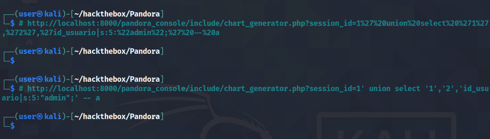

June 09, 2022
SQL Injection Vulnerability in Artica Pandora FMS 742 (CVE-2021-32099) - Example 01
In this tutorial, we will see how to perform a SQL injection attack in the pandora_console component of the Artica Pandora FMS 742. It allows an unauthenticated attacker to upgrade his unprivileged session via the /include/chart_generator.php "session_id" parameter which leads to login bypass.
This page contains more information about this exploit.
Paste in this URL in the browser.
Browsing this URL displays a blank page.

Browse to the "/pandora_console/" page or if you are already on that page then refresh it. It logs us in as admin.

This simple PHP script will run whatever command we pass to the "cmd" parameter.

Click on "Admin tools" and then click on "File manager".
It shows a bunch of images. Click on "Upload file(s)".
Click on Browse.

Select the PHP file.

Click on Go.

Now we can utitlize the PHP script to run commands on the server. It runs the whoami command.
Let's run a Bash reverse shell.
It is important to have netcat listening before running the reverse shell.
We can also upload a PHP reverse shell script to the target. Let's copy this script to the current working directory.

Enter in your own IP address and the port on which you will be listening.
Run the PHP reverse shell script using curl.

And we get a reverse shell on our netcat listener.
If you liked reading this article, you can follow me on Twitter: mujtabareads.
- AS-REP Roast Attach (Kerberoasting)
- Reset Password Using PowerView PowerShell Script
- Escalate Privileges via pip
- Escalate Privileges by Modifying the /etc/passwd File
- wp_admin_shell_upload
- Extract Passwords with LaZagne
- Bruteforce Windows Server SMB Credentials with Medusa
- Brute Force Windows Server SMB Credentials with Hydra
- Brute Force Windows Server SMB Credentials with NCrack
- Brute Force Windows Server SMB Credentials with CrackMapExec